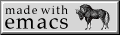
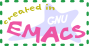
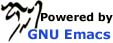
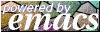
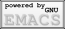
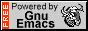
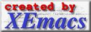
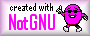

I've been collecting "powered by" web badges (or buttons)
for Gnu Emacs around the web.
Most of them are of unknown origin. (Source provided wherever
possible.)
Please let me know if you've got more. Send your contributions to
b64decode('bWFpbHRvOm1lQGVya2luLnBhcnR5').
|
A classic "antipixel". |
I like the Lisp alien vibes this one gives off. |
|

|
Transparent background. |
 | |
|

This one has plenty of variants. |
One such variant I use on my page. |
 |  |  |
Badges for other Emacsen, ersatz or not.
|

XEmacs |

NotGNU |